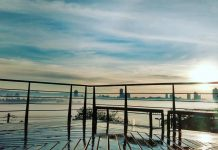

A população de São José dos Campos (SJC) em 2026 é estimada em aproximadamente 771.320 habitantes. Segundo o último censo oficial do IBGE (2022), o município contava com 697.054 habitantes, consolidando-se como a 5ª cidade mais populosa do interior do Brasil e uma das principais metrópoles paulistas
São José dos Campos (SJC) oferece excelentes opções de lazer, destacando-se por seus parques arborizados, cultura aeroespacial e o charme bucólico do distrito de São Francisco Xavier. Os principais pontos incluem o Parque Vicentina Aranha, o Parque da Cidade Roberto Burle Marx (com projeto paisagístico), o Memorial Aeroespacial Brasileiro e o Mirante do Banhado.

Aqui esta um exemplo de um dos melhores pontos turisticos de SJC, o Banhado